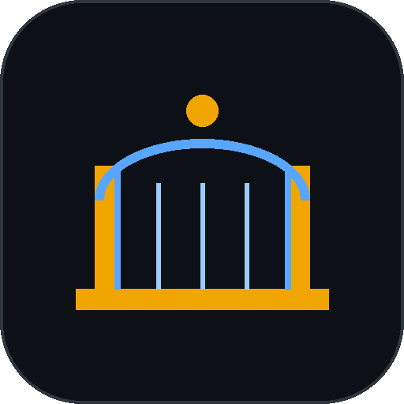
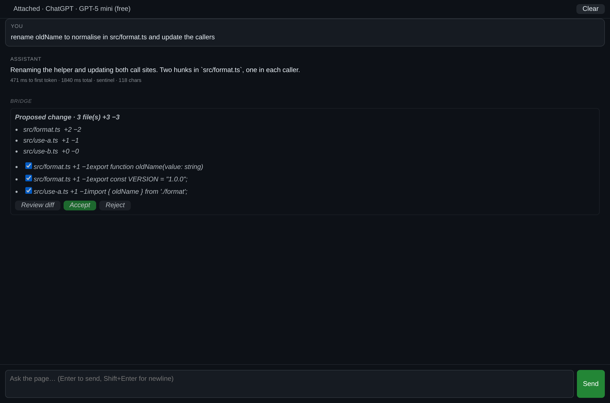
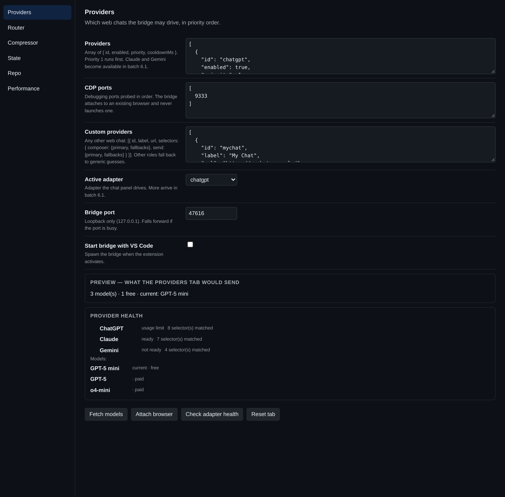
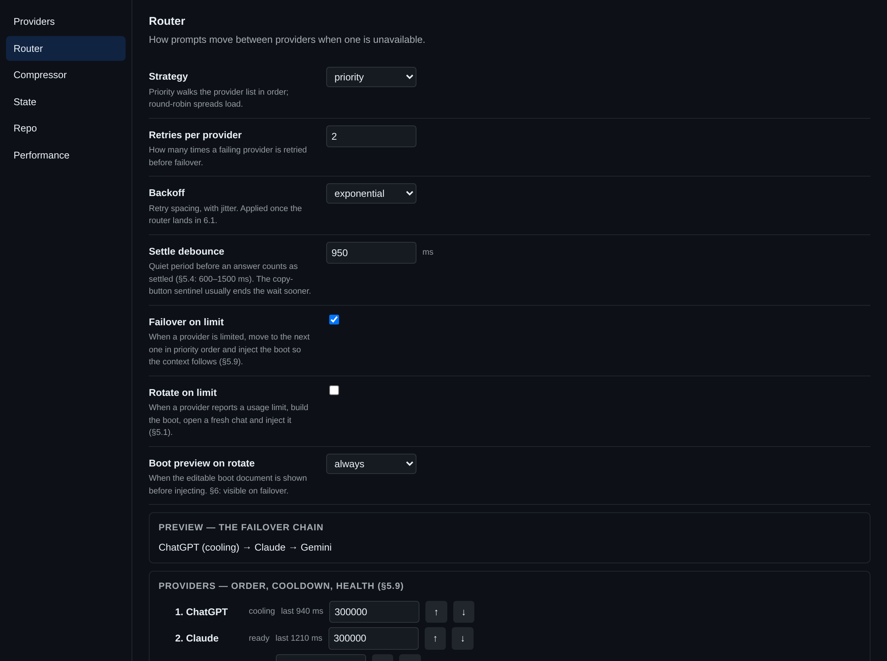

AI BridgeVS Code extension · experimental
You are already signed in to ChatGPT. You already pay for it. AI Bridge attaches to that tab and drives it from your editor — no API key, no second subscription, no new bill. It never launches a browser; it uses the one you opened.
Nothing to paste, nothing to leak, nothing to bill.
The model you already chose, on the plan you already pay for.
Every change is a proposal. Untick a hunk, accept the rest, one undo.
Hit a cap and the context walks to Claude or Gemini by itself.
A small Node process on loopback holds the browser connection. The extension owns everything that touches your files. Nothing leaves your machine except the prompts you send.



Measured with the project's own counter, on realistic inputs. Savings that break the prompt are not savings — identifiers, numbers, negations and code fences are checked to survive.
| Input | Tokens | Saved | |
|---|---|---|---|
| Polite one-liner | 34 → 21 | 38% | |
| Terse one-liner | 8 → 8 | 0% | |
| Verbose spec paragraph | 113 → 80 | 29% | |
| Pasted stack trace | 83 → 71 | 14% | |
| Code request | 68 → 59 | 13% | |
| Boot prompt | 975 → 974 | 0% | |
| Repo bundle | 588 → 370 | 37% |
Compression is noise on a terse prompt and a real 20–40% on verbose text and repo context. The bigger lever is not sending context the question doesn't need — a bundle costs 500–900 tokens, and it is only attached when you name a file, a symbol or a code term.
This is experimental software. The list on the right matters more than the list on the left.
Two commands, then attach the browser you are already signed in to.
# install the extension $ code --install-extension ai-bridge-0.20.1.vsix # open your browser with the debug port on (close it first) $ chrome --remote-debugging-port=9222 # then, in VS Code Ctrl+Shift+P → AI Bridge: Attach Browser
If the health dot is red, the site changed its page. Press AI Bridge: Export Breakage Report — it carries the host, the selectors tried and the tag/attribute names, and never a word of your conversation.